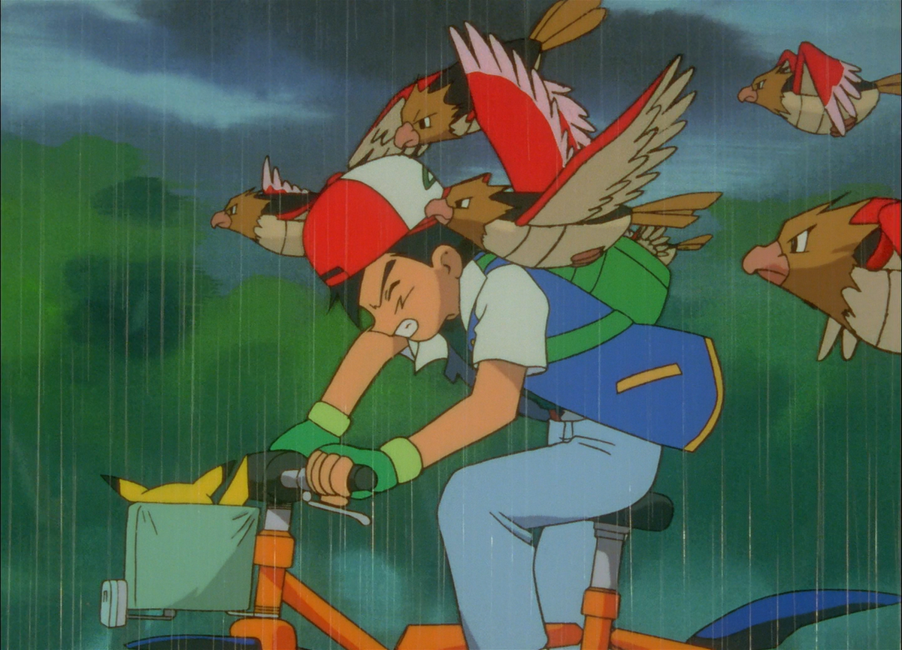

Ash began his journey at the age of 10 as a warm-hearted and well-intentioned but stubborn, rash, and amateur Pokémon Trainer.
He was forced to accept a stubborn Pikachu from Professor Oak as his starter Pokémon because he woke up late on the day he was set to get his first Pokémon.
After receiving Pikachu and a Pokédex, Ash left Pallet Town to start his journey.

He was determined to achieve his goal and when Pikachu saw that he was willing to compromise his safety to keep it safe, the two of them formed an extremely strong bond that has been noticed and remarked upon by many characters in the anime. This unbreakable friendship would set his course for the future. Ash find his Pikachu is not well and he borrow Misty's bike to save Pikachu.
In Pokémon Emergency!, Misty told off Ash after she found her bike Ash had "borrowed" to save Pikachu with was wrecked.
Here, Team Rocket made it their primary objective to steal Pikachu after witnessing Pikachu's power.
Misty continued following Ash as he headed for Pewter City, telling him in Showdown in Pewter City that she would continue following him until she was paid back for the bike.
On the way, Ash caught his first Pokémon, a Caterpie,
and he Catches another Pokémon "Pidgeotto".
In Showdown in Pewter City, Ash decided to compete in the Pokémon League regional championships by earning Badges from Gym Leaders across the Kanto region. Ash fought Brock, the Pewter Gym Leader, in a Pokémon battle and lost easily.
During his rematch, Ash nearly defeated Brock but refused to give the final blow due to the intervention of Brock's younger siblings.
Touched by Ash's kindness to Pokémon and with the return of his estranged father, Flint, Brock decided to go with Ash and pursue his dream of being the world's best Pokémon Breeder and gave Ash the Boulder Badge.
Next is Cerulean City,
In The Water Flowers of Cerulean City, Ash reached the Cerulean Gym and was shocked to learn that Misty was one of its Gym Leaders.
Though the match was interrupted when Team Rocket tried to steal the Pokémon from the Gym, Misty's sisters awarded Ash a Cascade Badge when Pikachu saved the Gym with a Thunderbolt.
He continued his journey with Misty, who had dreams of becoming the world's greatest Water Pokémon Master.
On the way to next city, Ash and friends discovered a Charmander that had been left in the rain by its former trainer, Damian.
Brock carried Charmander to the Pokémon Center, while Ash held his coat over the Charmander's tail flame to keep it lit. After Charmander saved Pikachu from being taken by Team Rocket, Ash caught it.
Every time he thought he was doing well, Ash would somehow cross paths with his childhood rival, Gary. Gary and Professor Oak reminded Ash that he was always a step behind Gary. In Mystery at the Lighthouse, Professor Oak told Ash that Gary had caught 45 Pokémon at a point when Ash only had seven.
In Island of the Giant Pokémon, Ash and his friends were swept away onto Pokémon Land, located on the Island of the Giant Pokémon, after a group of Gyarados triggered a cyclone using Dragon Rage. Four of Ash's Pokémon, including Pikachu, had gone missing during the chaos, but they found their way back to him the following day. Ash and the others took a ferry back to the mainland from Tentacool & Tentacruel to The Ghost of Maiden's Peak.
Many of Ash's first Gym Badges were given to him merely out of gratitude for his assistance, rather than claiming an actual victory in battle over the Gym Leaders. Of the first five Gym Badges that had been given to Ash in Kanto, only Lt. Surge's Thunder Badge in Electric Shock Showdown was earned from a victory in battle.
Ash's troubles were not made any easier when his Charmander, after evolving into a Charmeleon, and then a Charizard, grew too powerful and refused to listen to him until Ash could prove himself.
Over time, Ash's dedication to his goal paid off. After earning his first eight Badges, Ash went on to compete in the Indigo Plateau Conference, advancing to the fifth round - one further than Gary - and ending up in the Top 16, his defeat coming in the form of his Charizard refusing to battle for him.
ORANGE ISLAND ADVENTURES
Following Ash's defeat in the Indigo League, Professor Oak asked him to travel to Valencia Island in the Orange Archipelago to retrieve the GS Ball from a Pokémon Professor named Ivy.
While in the Orange Archipelago, Ash learned of the Orange Crew, an elite group of Trainers not unlike Gym Leaders, that provided challenges for Trainers to overcome in the Orange League.
After Brock decided to stay with Professor Ivy and help her with her work, Ash and Misty were joined by an enthusiastic Pokémon watcher named Tracey Sketchit.
Ash, Misty, and Tracey traversed the Orange Islands on the back of a lost Lapras. Ash caught the Lapras during this time.
He eventually defeated the four members of the Orange Crew and finally won the Orange League by triumphing over the Orange Crew Supreme Gym Leader, Drake.
Before leaving the Orange Archipelago, Ash managed to find his Lapras's pod and released it back into the wild.
Upon returning to Pallet Town, Ash discovered that Brock had returned due to some unknown incident that left the aspiring Pokémon Breeder in dread of even hearing Professor Ivy's name.
Meanwhile, Tracey stayed at Professor Oak's Laboratory as Professor Oak's assistant, and Brock rejoined Ash and Misty.
After his victory in the Orange League, Ash encountered Gary again, and after being defeated in a one-on-one battle, he learned that his rival had been training hard to participate in the Silver Conference in Johto.